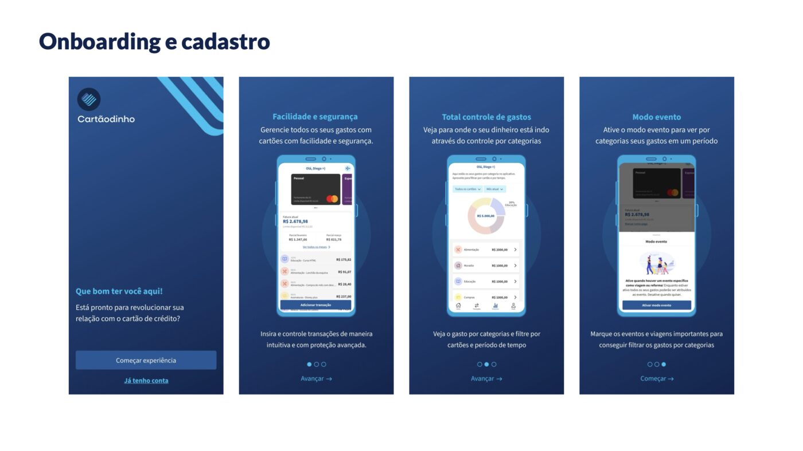
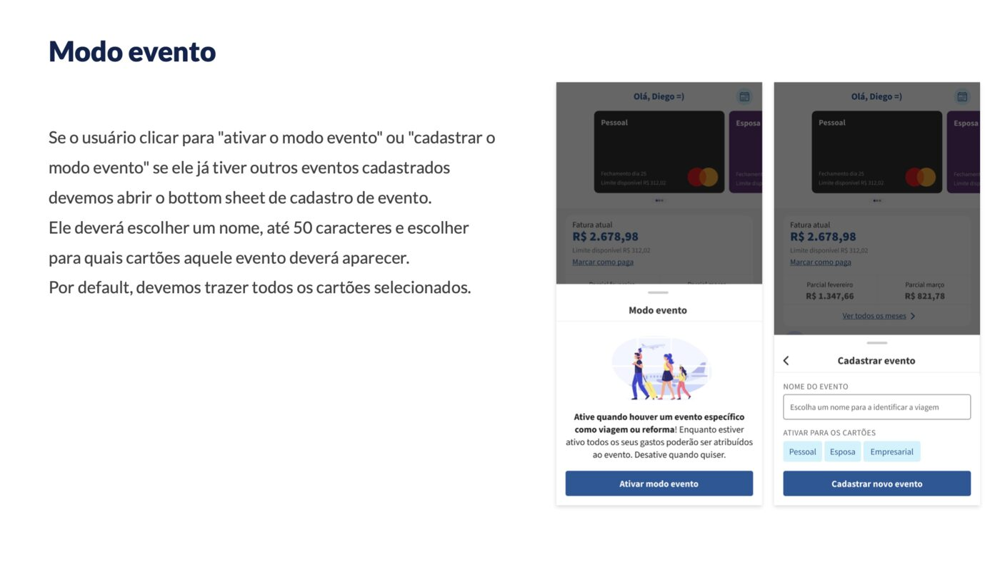

00 TL;DR
Um cliente me procurou querendo construir um app de gestão financeira pessoal focado em cartão de crédito. Conduzi o projeto desde o discovery: entendi a dor, analisei concorrentes, ajustei o recorte estratégico, escrevi todas as regras de negócio e desenhei o fluxo completo de telas. Entreguei um produto com roadmap em 3 fases e modelo de monetização freemium já pensado desde a concepção.
01 Contexto do projeto
Esse foi um trabalho freelance que rodei fora do meu dia a dia como PO/Designer do Sexlog. O cliente queria construir um app próprio de finanças pessoais com foco em cartão de crédito, mas tinha só a ideia em estado bruto. Meu papel foi pegar essa intenção e transformar em um produto viável: do discovery e diferenciação até as telas finais e regras de negócio prontas pra desenvolvimento.
O escopo final do meu trabalho incluiu:
- Discovery do problema e validação da proposta de valor
- Pesquisa de mercado e análise dos concorrentes diretos
- Definição do recorte estratégico (no que ser bom)
- Escrita completa de regras de negócio
- Desenho de todos os fluxos e telas em alta fidelidade
- Roadmap em três entregas, incluindo modelo de monetização
02 A dor que o app resolve
Quem tem mais de um cartão de crédito (pessoal, empresarial, do parceiro, de viagem) acaba caindo em três armadilhas conhecidas:
- Perde a visão consolidada: cada fatura chega em um aplicativo do banco diferente, em datas diferentes, sem possibilidade de comparar.
- Faz controle no improviso: planilhas, anotação no bloco de notas, cabeça. Tudo desatualizado em uma semana.
- Não enxerga padrões de gasto: sem categorização consistente é impossível responder "quanto gastei com alimentação esse mês?" ou "quanto custou aquela viagem inteira?".
Insight central: os apps existentes ou são generalistas demais (somam tudo que entra/sai e ignoram a lógica de fatura) ou são especializados demais (controle de orçamento corporativo, investimentos). Faltava um produto obcecado por cartão de crédito e pela vida real de quem tem múltiplos cartões em uso.
03 Processo de discovery
Antes de desenhar qualquer tela, parei pra investigar. Apliquei o que uso no Sexlog ajustado pra escala de freelance:
- Conversa com o cliente: entendi a hipótese inicial, o público que ele queria atingir e quais eram os "must have" pra ele.
- Entrevistas curtas com usuários do nicho: conversei com pessoas que ativamente usam mais de um cartão para mapear como elas gerenciam hoje, o que dá errado e o que tentaram no passado.
- Mapeamento de hábitos: identifiquei comportamentos comuns (ex: "lanço a compra na hora de fechar a fatura, esquecendo dos parcelamentos", "esqueço de transformar uma viagem inteira em uma categoria").
- Definição de jobs to be done: reduzi a complexidade a três jobs principais — saber quanto vou pagar de fatura, entender pra onde meu dinheiro vai e organizar gastos sazonais sem bagunçar minhas categorias normais.
04 Pesquisa de mercado
Para posicionar bem o produto, mapei os concorrentes brasileiros mais relevantes (Mobills, Organizze, Minhas Economias, apps dos próprios bancos) e analisei cinco aspectos em cada um: foco, experiência de cadastro de transação, relatórios, tratamento de parcelamento e modelo de monetização.
Conclusões que moldaram o Cartãodinho:
- Quase todos misturam conta corrente, investimentos e cartão: isso faz com que a experiência seja boa "no geral" mas medíocre pra quem só quer organizar cartões. Optei por especialização.
- Cadastro de transação costuma ser fricção alta: várias telas, muitos campos obrigatórios, parcelamento mal resolvido. Decidi que o foco do nosso UX seria velocidade no cadastro.
- Relatórios são quase sempre só pizza por categoria: sem possibilidade de filtrar por cartão específico ou por evento temporal (uma viagem, uma reforma). Aí nasceu o Modo Evento.
- Monetização é geralmente paywall pesado: ou tudo gratuito com anúncios chatos, ou tudo pago. Calibrei um freemium em camadas: o essencial é grátis, e features que economizam tempo (scan/import) viram premium.
05 Solução: visão geral
Onboarding curto com três telas comunicando os principais benefícios: facilidade e segurança, controle por categorias e modo evento. Pensei pra o usuário entender o diferencial logo na primeira impressão.

06 Telas principais
As quatro abas que sustentam a experiência principal: home com cartão e fatura, log de transações, relatório por categorias e perfil. Acesso em uma mão, com botão flutuante de adicionar transação sempre 16px acima da navbar.

Adicionar transação
Bottom sheet com teclado numérico já aberto e foco no valor (primeira ação esperada). Compra ou estorno, categoria por bottom sheet em camadas, recorrência e parcelamento com defaults inteligentes pra reduzir cliques.

Modo evento — recurso original
A funcionalidade que mais define o produto. Quando o usuário ativa o Modo Evento (ex: viagem, reforma, casamento), os gastos daquele período viram um agrupamento próprio, sem bagunçar as categorias normais. Cada evento pode ser ativado em cartões específicos e aparece como filtro próprio nos relatórios.

Relatório por categorias
Gráfico de pizza ordenado do maior gasto para o menor, com filtros multi-select por cartão e seletor de período (mês atual default, com opção personalizada e filtro por evento quando há algum cadastrado). Clique na categoria abre todos os gastos ordenados.

07 Roadmap em 3 entregas
Para destravar valor cedo e amadurecer a complexidade no tempo certo, organizei o produto em três entregas:
Fluxo principal completo
Onboarding, cartões, transações, faturas e relatórios.
Toda a experiência de gestão multicartão, cadastro de transação, navegação entre faturas, relatórios por categoria e Modo Evento.
Processamento de imagem
Scan de cupom e import de fatura.
Câmera lê cupom de compra e pré-preenche a transação. Upload de PDF de fatura importa transações em lote. Reduz o atrito da digitação.
Premium e anúncios
Freemium calibrado.
Scan e import viram exclusivos do premium. Anúncios na entrada do relatório com gatilho "pular vira assinar". Três planos recorrentes com gestão pelo próprio app.
08 Algumas decisões de produto
- Default inteligente no cadastro: tipo "compra" marcado, última categoria usada pré-selecionada, parcelamento "à vista" e teclado numérico já aberto com foco no valor.
- Modo evento por cartão (não global): permite usar o recurso em casos como "viagem só no cartão pessoal, não no empresarial".
- Subcategorias opt-in: 15 macros vêm habilitadas; subcategorias só aparecem quando o usuário escolhe. Mantém simples pra quem não quer granularidade.
- Double check em ações destrutivas: excluir cartão, excluir transação e desvincular conta Google passam por confirmação em bottom sheet.
- Preserva histórico ao desabilitar: se uma subcategoria com transações é desligada, ela some do cadastro mas continua aparecendo no log e nos relatórios.
09 O que esse projeto provou
- Capacidade de conduzir um produto end-to-end sozinha, sem o suporte de um time interno: discovery, pesquisa, estratégia, regras, telas e roadmap.
- Trabalhar com cliente externo, entendendo objetivo de negócio, traduzindo em escopo viável e entregando algo pronto pra desenvolvimento.
- Pensar produto e monetização juntos desde a concepção, evitando paywalls forçados depois.